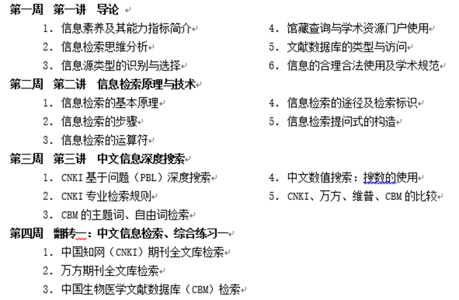
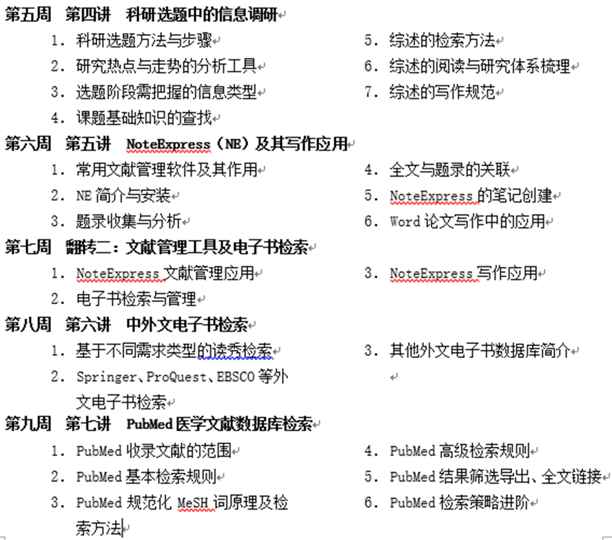
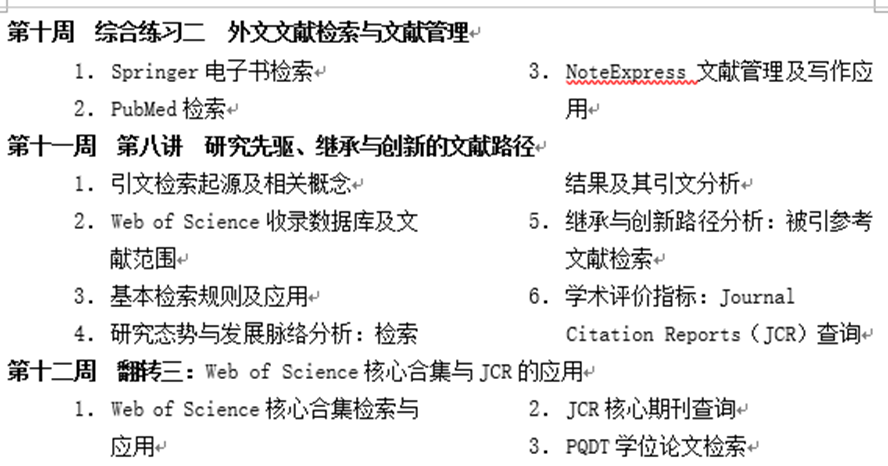
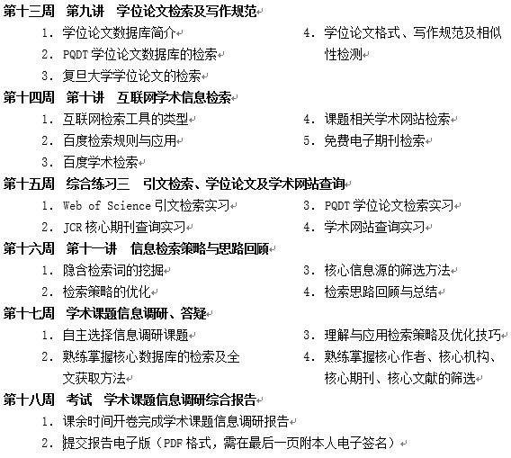

2025秋 · MED40012.01 · 符礼平、王宇芳
来源：复旦教务系统教学大纲，本轮使用已授权账号下载。原始正文与考核信息；去除联系方式和网页脚本，内嵌图片按原字节去重保存。
培养学生高效获取医学信息资源的能力，掌握检索、管理、分析、筛选文献信息的方法，提升信息素养与学术素养。从学术探究的视角出发，从选题到检索，从文献管理到信息筛选阅读，掌握科研继承与创新的文献分析路径，为学术研究和解决医学问题做好准备。
The course aims at cultivating students' skills of acquiring medical information resourses efficiently, enabling them to master the methods of retrieving, managing, analyzing and screening information, and thus improving their information and academic literacy. It covers research topic selection, literature retrieval and management, information screening and analyzing from the perspective of academic exploration. It helps students command the path of scientific research inheritance and innovation, and prepares students for academic research and solving clinical problems.
提升医学生学术探究能力，选题调研能力；使学生掌握文献检索规范、文献管理工具与文献评价指标，初步形成检索思维方式；通过综述阅读方法与写作规范学习，提升学生规范意识。本课程将为学生其他课程的学习、学术研究、毕业设计等构建必须的基础能力。
采用混合式教学方法，计算机教室一人一机课堂教学，结合在线学习平台自主学习，教师讲授与学生展示融合，理论、思维与实践相结合，期末课后开卷完成《学术信息调研报告》。
每周教学内容与进度如下：




王宇芳，符礼平，曹兵，张嵬编写 医学文献检索与利用（上海市精品课程）网站 复旦大学在线课程平台（超星） 实时更新
| 项目 | 比例 | 评定说明 |
|---|---|---|
| 作业/实验/实践Assignment | 30.0% | 按时提交配套习题（选择题）、综合练习； 综合练习的正确率。 |
| 汇报Presentation | 10.0% | 按时参加小组讨论，提交翻转题汇报材料（仅组长），汇报时演示讲解的正确性与效果。 |
| 期末考试Final Examination：其他 | 60.0% | 课后开卷完成《学术信息调研报告》（自选课题）； 选题质量、检索策略合理性、核心资源适用性、文献标注规范性、检索思路正确清晰。 |